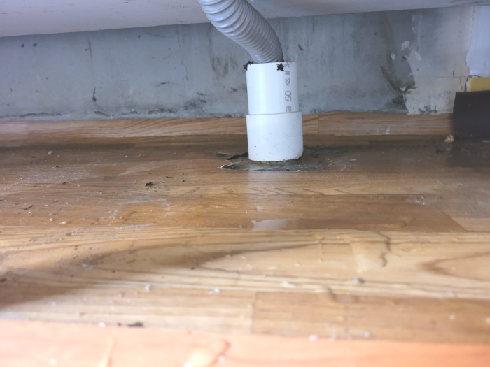
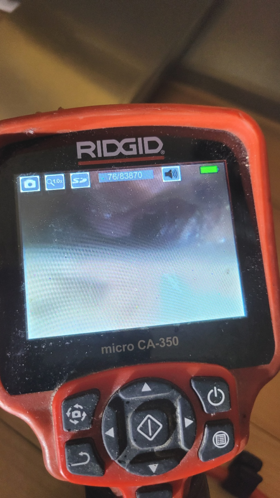
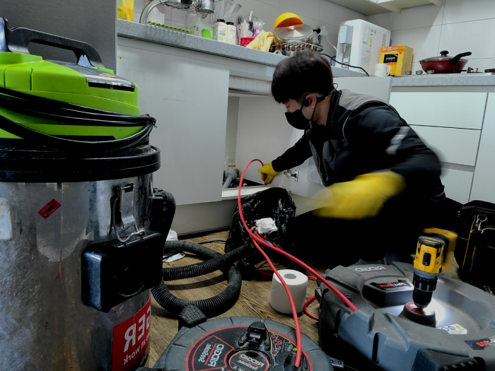
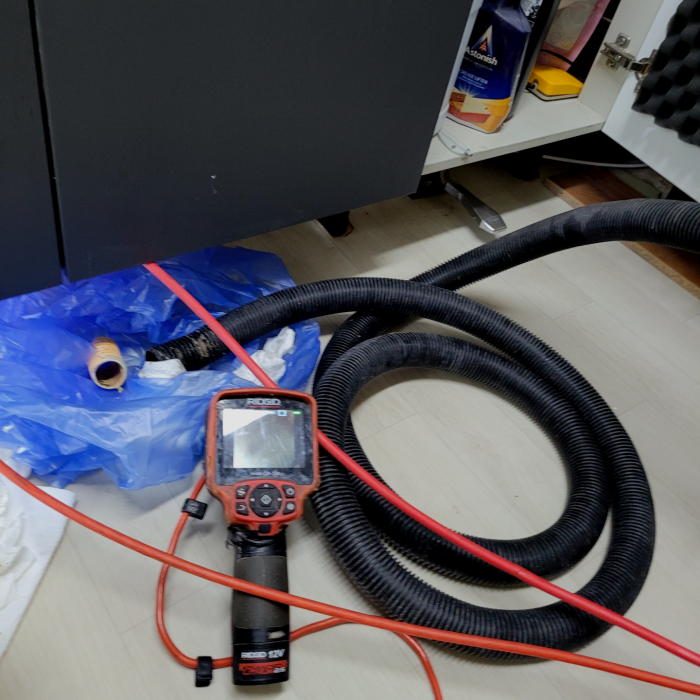
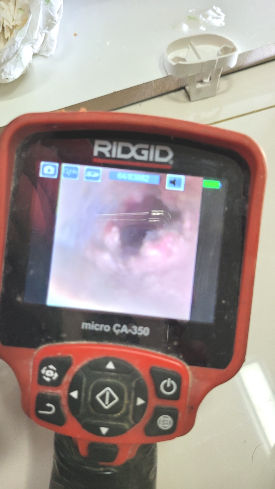
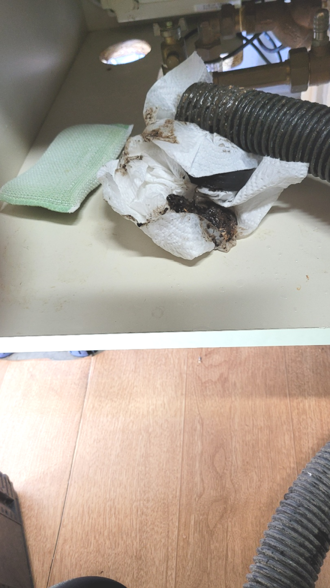

🏠 양천구 목동 싱크대배수관막힘 신월동 배수구역류 뚫는곳 설비
서울 양천구 싱크대막힘 전문 시공 후기

📋 작업 개요
- 위치: 서울 양천구, 양천구, 서울
- 서비스 유형: 싱크대막힘, 변기막힘, 하수구막힘, 배관막힘, 누수수리, 역류해결, 뚫는업체, 배관청소, 고압세척, 설비공사
- 작업 일시: 2024. 1. 1. 22:24
- 업체명: 하수구수사대 (010-5615-2118)
🔍 문제 상황
어서오세요
설비전문업체 "하수구수사대"를 찾아주셔서 감사드립니다.
안녕하세요^^ 배수관막히셨나요? 만약 하수구가 막힐 경우 필요할 때 물을 사용할수가 없고 사용을 해도 물이 고여서 배수가 되지 않는다면 굉장히 불편하고 위생적으로 불쾌하실거에요.
양천구 목동 싱크대배수관막힘 신월동 배수구역류 뚫는곳 설비
여러 배출구가 물이 안통할 만큼 막혔다면 어떤 장비로 해결을 해야 할까요? 어떤 상태인지에 따라 방법과 장비가 달라지는데요 이물질의 모양이 예상한 것보다 부드럽고 조금 막혀있다면 약품을 여러번 부어서 없애는 방법도 있지만 쉽게 뚫리지 않는 경우도 있습니다.

🔎 원인 분석
💡 전문가 진단: 양천구 목동 싱크대배수관막힘 신월동 배수구역류 뚫는곳 설비
전문적인시공능력과 그에맞는배수장비 이부분을모두 채워줄수있는업장에 공사진행요청하는것이 합리적입니다. 배수막힘이 발생한 원인지점에 사용가능한 장비를소지하고 믿을수있는인력들이 지역을망라하여 내방해드립니다. 어려운현장이라도 거절하지않고 방문드리고있습니다.
여태까지의 생활 습관들과 당시의 현상과 관련하여 어떠한 행동을 했었는지 미리 알아보았습니다. 배수뚫는업체를 알아보기까진 현장에서 거의 셀프로 파보는 시도 등은 대부분이 해보시는 경우가 비일비재 한데요. 당시 배수현장도 뚫어뻥을 활용하여 어떻게 해서든 처리해보려 하였으나, 결국 성공하지 못하여 도와달라 했어요.
서둘러서 저희가 꼼꼼하게 해드리지 않고 천천히 내시경카메라를 보면서 작업을 해드리면서 마무리를 지었습니다. 노커체인을 배수구 안에 이무질이 있는곳으로 넣고 난 뒤에 시작을 한 현장이었습니다. 일반적으로 하는 일은 아니지만 십년넘은 경력으로 꼼꼼하게 해드렸습니다.
물론 스스로도 해결될 때가 대부분이긴 하나, 퇴수배관 막힘 일은 속도전이라고 얘기할 수 있을 만큼 시간이 오래걸릴수록 해결이어려워 될 수 있으면 퇴수전문가의 손길을 빌려 해결하시는 걸 추천합니다. 그리고 나서 확인을 위해 퇴수에 물을 틀어 어느 정도로 막혔는지를 확인해봤는데요.
배출구배관에 물이 어느 정도 빠진 뒤 흡입기로 이물질을 빼내고 플렉스 샤프트를 이용하여 배수가 가능하도록 물길을 내어 드렸습니다. 고객님은 이를 보시곤 혹시라도 시공 비용이 더 나올까 봐 걱정하셨는데 이는 배출구역류 사태를 막기 위해서 해드린 서비스라고 설명해 드리자 기뻐하셨습니다.

🔧 작업 과정
하수뚫는 작업을 진행후 이물질이 다 올라온 것을 확인하고 나서 배수가 원활하게 이루어지는지 마지막 과정으로 점검하였고, 오래된 하수이기 때문에 고객님께서 필요하시면 배관 청소까지 진행 도와드리겠다고 하였습니다.
이물질들이 팽창하여 관에 강한 압력을 가하고 있었고 조금이라도 지체되었다면 곧 터질 것 같은 현황이었죠. 만일 배관배관에 금이 가거나 터져버린다면 누수로 이어져서 더 큰 어려움을 겪을 수 있기에 신속하게 응급처치하여 압력을 낮추고 작업을 시작하였습니다.
말도없이견적가를 청구하는것이아닌 무엇때문에 견적비용이 청구됐는지 전문배관공과같이 배수관내시경화면을 보여드리면서 상황에관해 설명드리고있어요
하수도 수리를한번맡기시고도 여러차례의뢰하시는 고객분들이계셔서 빈틈없게끔 도와드리고있으며 신용을중요하게 여기고있어요.
게다가 이제 막 일을 시작한 경우라면 오히려 기계를 사용하다 배수배관 안에 구멍을 만든다거나 소모품을 빠뜨리는 등의 추가적인 문제를 발생시킬 가능성이 있습니다. 실제로 저희에게 연락을 주시는 분들의 전화를 받아보면 큰 고민 없이 주변 배수 업체에 일을 맡겼다가 후회하시는 분들도 많으셨습니다.
퇴수구막힘의 근본적인 문제점을 찾아 동반해야 합니다. 내시경 장비 없이 진행한다면 뚫어드리고 있어요. 부속품을 바꿔야 할 때는 손상된 퇴수구배수관들을 보니 흙탕물이 역류하여 있는 것을 확인할 수 있었어요. 계속해서 말씀드리지만, 실력이 없다면 복잡다단한 퇴수구배관 구조를 다 모른다면 이겨내지 못할 거예요.
이 장비는 밖에서 흡입을 전문으로 하는 석션기와는 다른 작업 방식으로 체인이 전동드릴의 힘으로 인해서 돌아가는 거라 석회를 분쇄하면서 배관 안에 있던 머리카락도 다량 빠져나왔습니다.
물을 직접 흘려보내면서 증상이 발생하는지 잘 해결되었는지 마무리 점검을 했습니다. 내시경 장비로 하수도배관 내부를 확인해도 깨끗해진 배관으로 물이 제대로 배수되어 나가니 하수도막힘 증상은 더 이상 보이지 않았지요. 그래서 고객님께 작업 진행 이야기와 배관 내시경으로 마지막 배관 모습을 보여드린 뒤 작업한 장소를 깨끗하게 정리한 뒤 마무리할 수 있었습니다.


✅ 작업 완료
구석구석 살펴본 뒤 조치하지 않으면 기름때들은 쌓이기만 하면서 예상치 못한 증상까지도 만드는 것입니다. 이렇기 때문에 배관작업을 하게 되면 어떤 현장이든지 전체 구간 세척작업하고 있습니다.
하수 관련된 곳이라면 무엇이든 도맡아 하고 있으니 늦어지기 전에 막힌 배수관을 뚫어내고 싶으신 경우 밤낮없이 대기 중이니 통화 걸어 주시면 친절하게 맞이해 안내해 드립니다.
#하수구막힘 #하수구뚫음 #하수구역류 #씽크대막힘 #싱크대역류 #오수관막힘 #하수구청소 #욕실하수구막힘 #변기막힘 #하수구뚫는비용 #싱크대수리 #화장실막힘




⚠️ 베란다 누수 및 방수 관리 방법
- ✅ 비가 많이 올 때 창틀 주변이나 아래층 천장에 얼룩이 생기는지 정기적으로 확인해 보세요.
- ✅ 우수관 주변 실리콘 마감이 들뜨거나 깨진 틈새가 있는지 손상 여부를 수시로 체크하세요.
- ✅ 베란다 바닥 타일의 줄눈(메지)이 소실되면 그 틈으로 물이 침투하여 누수가 유발됩니다.
- ✅ 누수 의심 증상 발견 시 방치하면 아래층 손실이 커지므로 즉시 전문가의 진단을 받으십시오.
💡 핵심 정리
- 확실한 장비 작업(내시경 점검 및 샤프트 스케일링)으로 원인을 뿌리 뽑습니다.
- 작업 후 1년 이내에 동일한 부위 재발 시 100% 무상 A/S 서비스를 보장합니다.
- 서울 · 경기 · 인천 전 지역에 24시간 언제든 긴급 출동할 수 있도록 항시 대기 중입니다.
❓ 자주 묻는 질문 (FAQ)
🚨 서울 양천구 싱크대막힘 문제로 고민이신가요?
정확한 원인 진단과 확실한 시공으로 재발 없는 해결을 약속드립니다.
24시간 긴급 출동 | 서울 · 경기 · 인천 전지역 | 1년 내 재발 시 무상 A/S